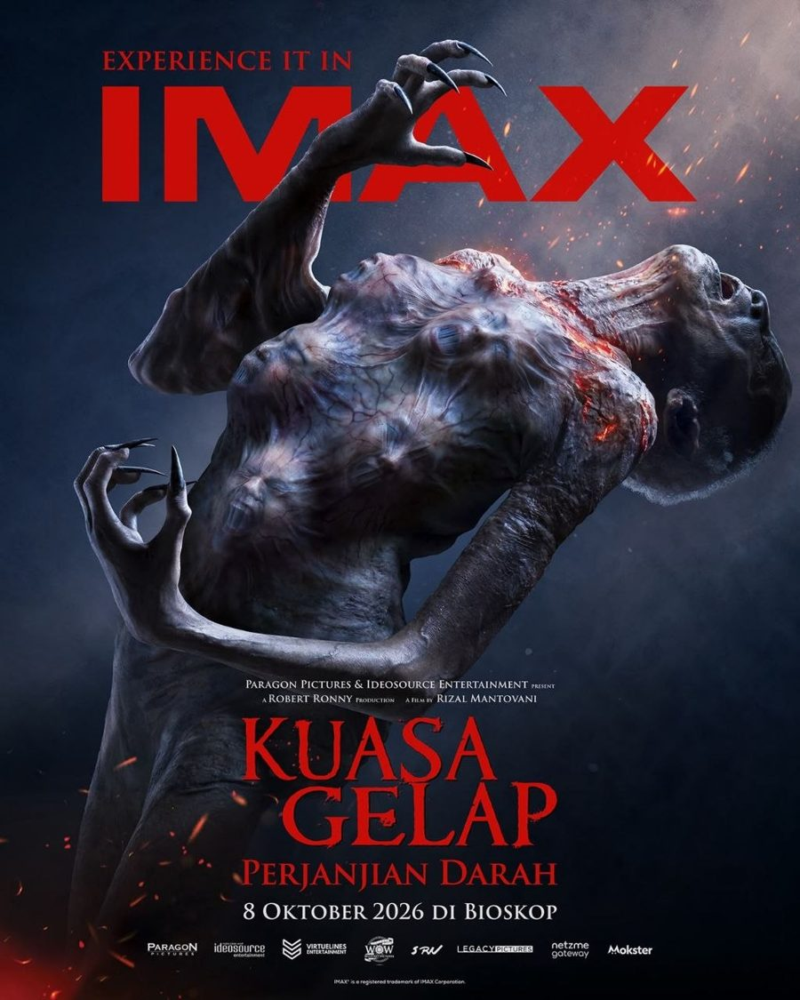

Rachmad Aditya
VFX Artist · Roto Artist · Prep Artist · Junior Online Editor
Compositor di Whisper Media selama lebih dari lima tahun. Mengerjakan VFX, rotoscoping, prep, dan online editing untuk film layar lebar, series, dan iklan televisi.
Compositor at Whisper Media for more than five years. Working on VFX, rotoscoping, prep, and online editing for feature films, series, and TV commercials.
KaryaSelected work
Jumlah shot dari log kerja freelance.Shot counts from my freelance work log.
Before / after · klik untuk memperbesar dan geserBefore / after · click to enlarge and drag
PengalamanExperience
KeahlianSkills
DisiplinDisciplines
Software
Pekerjaan yang sering diambilTypical tasks
- Cleanup dan object removalCleanup and object removal
- Sling, rig, marker, boom, dan objek yang tidak diinginkan.
- Slings, rigs, markers, booms, and unwanted objects.
- Screen replacement
- Layar ponsel, laptop, dan TV, termasuk tangan yang lewat di depannya.
- Phone, laptop, and TV screens, including hands passing in front.
- Green screen dan 3D trackingGreen screen and 3D tracking
- Keying, spill, dan elemen yang ikut gerakan kamera.
- Keying, spill, and elements that follow the camera move.
Harga keluar setelah setiap shot dinilai.A price comes after every shot is assessed.
Kirim plate dan shot listSend plates and a shot list
Sertakan durasi, format, dan deadline.
Include duration, format, and deadline.
Breakdown per shotPer-shot breakdown
Setiap shot dinilai tingkat kesulitannya, lalu diestimasi waktu dan harganya.
Each shot gets a difficulty rating, then a time and price estimate.
Pengerjaan dan reviewWork and review
Versi dikirim untuk dicek, revisi sesuai catatan.
Versions go out for review, with revisions from your notes.
Delivery
File final dikirim dalam format yang disepakati di awal.
Finals are delivered in the format agreed at the start.
Lima tingkat kesulitan yang dipakai di setiap breakdown:
The five difficulty levels used in every breakdown:
- MudahEasy
- SedangMedium
- LumayanFair
- Agak sulitTough
- SulitHard
Punya shot yang perlu dibereskan?Got shots that need fixing?
Kirim email berisi info di bawah, dan saya balas dengan breakdown serta estimasi.
Email me the details below and I will reply with a breakdown and an estimate.
- Jumlah shot dan durasi masing-masingNumber of shots and their durations
- Jenis pekerjaan (roto, cleanup, keying, tracking)Type of work (roto, cleanup, keying, tracking)
- Format dan resolusi deliveryDelivery format and resolution
- Deadline